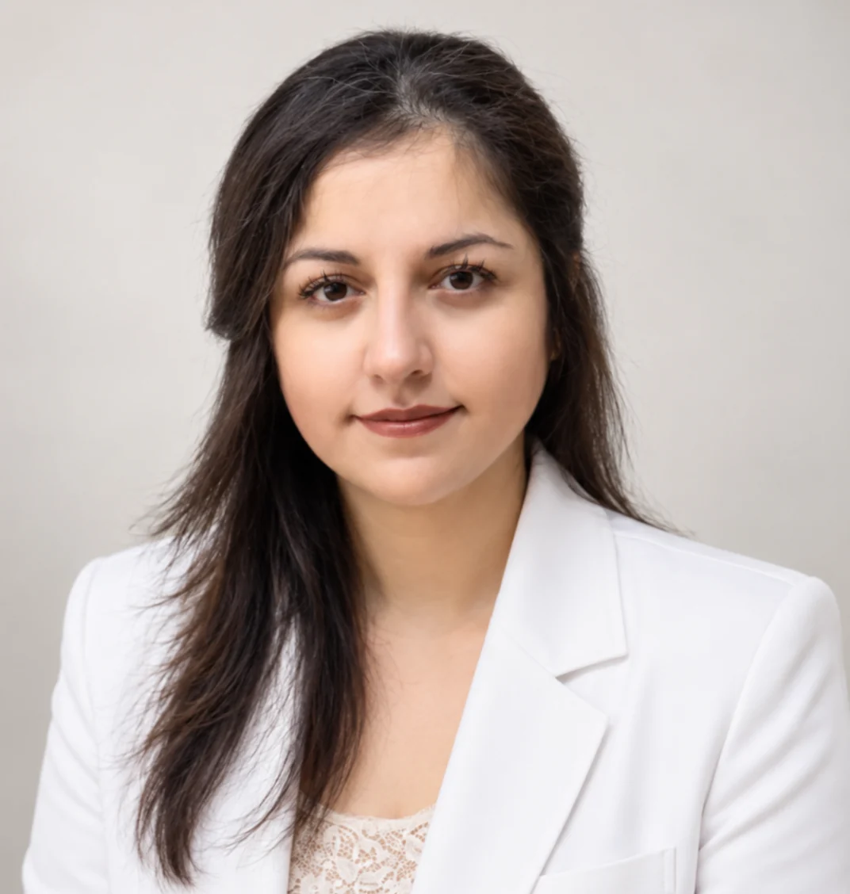
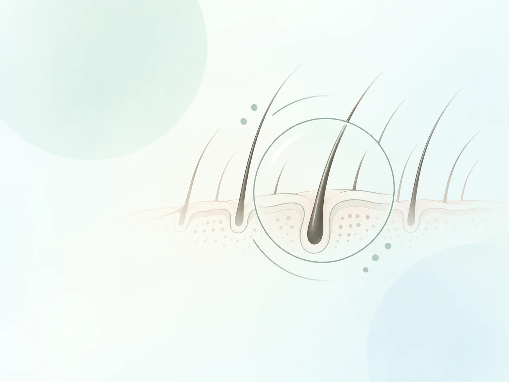
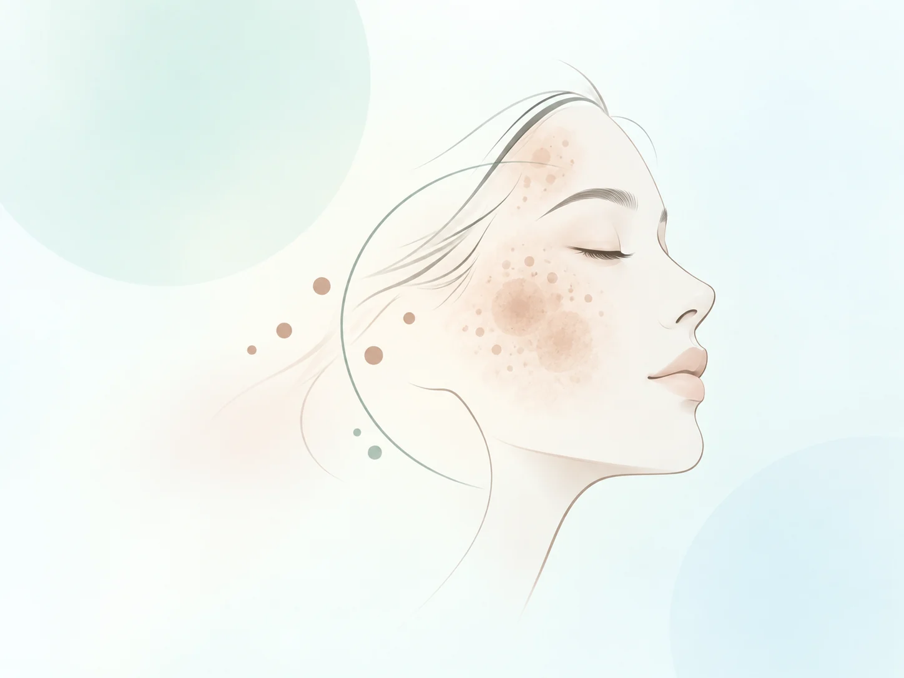
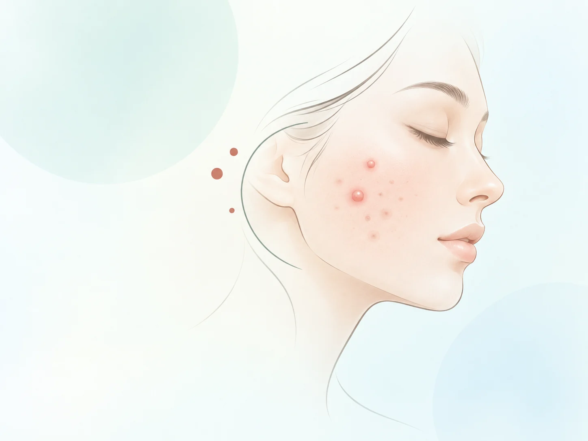
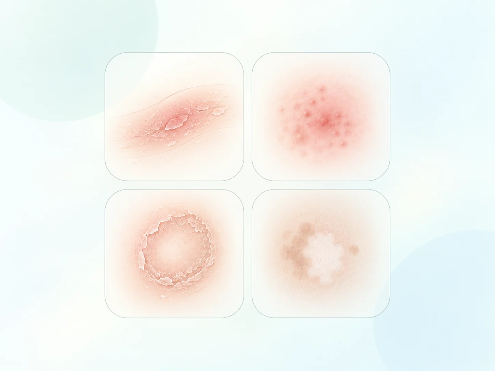
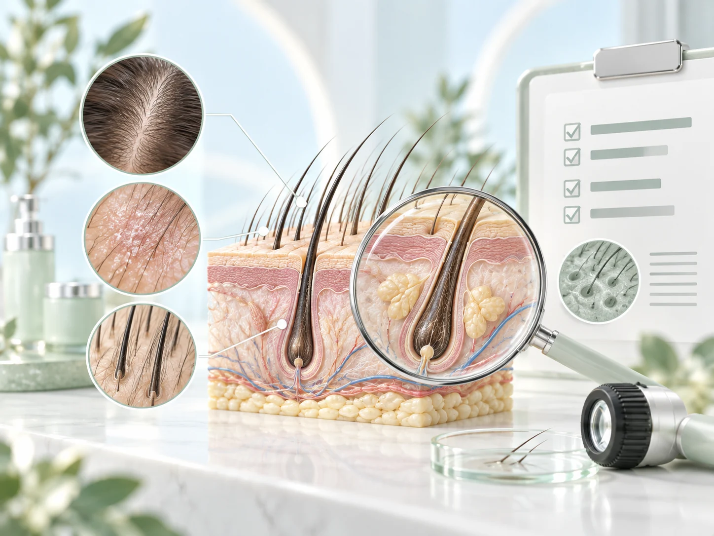

پوست، مو و زیباییرویکرد دقیق و مبتنی بر معاینه
بررسی و درمان آکنه و جای جوش، ریزش مو، لک و ملاسما و بیماریهای پوست و مو با انتخاب درمان متناسب با شرایط هر فرد.

هر یک از مشکلات پوست و مو، مسیر بررسی و درمان مختص خودشان را دارند

ریزش مو
بررسی علت ریزش مو و انتخاب درمان متناسب با نوع ریزش و وضعیت پوست سر.
مشاهده صفحه ←
لک و ملاسما
بررسی نوع لک، عوامل تشدیدکننده و انتخاب برنامه درمانی متناسب با پوست.
مشاهده صفحه ←
آکنه و جای جوش
کنترل آکنه فعال، لک پس از جوش و انتخاب روش مناسب برای انواع اسکار.
مشاهده صفحه ←
بیماریهای پوست و مو
بررسی بیماریهای شایع مانند اگزما، پسوریازیس، عفونتهای پوستی و مشکلات پوست سر.
مشاهده صفحه ←دکتر نوشین پیروی
دکترای حرفهای پزشکی با بیش از ۱۲ سال سابقه فعالیت در حوزه پوست، مو و زیبایی. حوزههای اصلی فعالیت شامل آکنه و جای جوش، ریزش مو، لک و ملاسما و بیماریهای پوست، مو و پوست سر است.
انتخاب روش درمان پس از بررسی شرایط هر فرد و بر اساس نوع و علت مشکل انجام میشود.
چرا بررسی دقیق قبل از درمان اهمیت دارد؟
بسیاری از مشکلات پوست و مو ممکن است ظاهر مشابهی داشته باشند، اما علت آنها متفاوت باشد. برای مثال، ریزش مو، لکهای پوستی یا آکنه میتوانند تحت تأثیر عوامل مختلف ایجاد یا تشدید شوند.
به همین دلیل، انتخاب روش درمان مناسب پس از بررسی شرح حال، شرایط فرد و نوع مشکل انجام میشود. هدف، انتخاب درمان متناسب با علت و شرایط هر فرد است.
